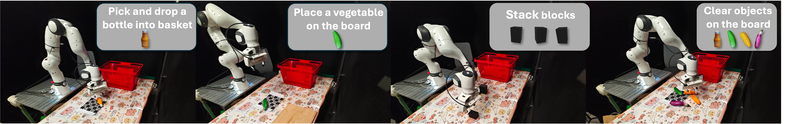
Note: Four tasks with individual policies are used to validate the effectiveness of RE3SIM.
Note: We manually aligned the objects with those in the simulation, but noticeable pixel-level discrepancies remain. The background alignment also has some pixel-level deviations. These factors collectively lead to the relatively low PSNR and SSIM values of all methods, especially in the texture-rich scene.
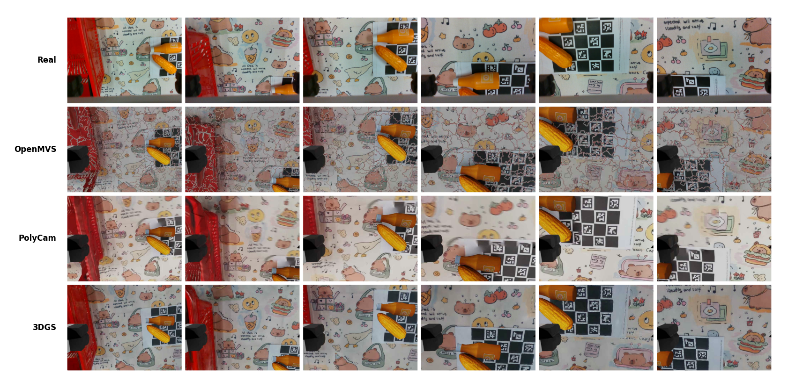
Note: 3DGS outperforms Polycam in both RSNR and SSIM. Its PSNR is comparable to OpenMVS, but SSIM is notably higher. OpenMVS's reconstruction has cracks, causing an obvious sim-to-real gap. The qualitative and quantitative results demonstrate that RE3SIM is capable of producing high-quality and well-aligned reconstruction results, making zero-shot sim-to-real transfer possible.
Note: RE3SIM can generate high-quality simulation data for training generalizable robotic policies by zero-shot sim-to-real transfer. Here are the videos of the real-world experiments of tasks pick and drop a bottle into the basket, place a vegetable on the board, stack blocks and clear objects on the table. All videos are played at normal speed.
Pick and drop a bottle into the basket
Place a vegetable on the board
Stack blocks
Clear objects on the table
Note: human effort in reconstruction. The table presents estimated reconstruction times at the table level. Additionally, we show the human effort for reconstructing an object with ARCode.
| Input Types | Video | Images | ARCode |
|---|---|---|---|
| Human Efforts (s) | 51.5 | 84.5 | 60.5 |
Note: time cost for simulation data collection. Time needed to collect 100 episodes of simulation data for each task, using a machine equipped with 8 RTX 4090 GPUs.
| Tasks | Time Cost (minutes) |
|---|---|
| Pick and drop a bottle into the basket | 12.35 |
| Place a vegetable on the board | 13.78 |
| Stack blocks | 6.45 |
Note: To push the limit of utilizing synthetic data for real-world manipulation problems, we choose a clear objects on the table task and evaluate the generalizability of a policy trained on a large-scale simulation dataset.
Note: Doubling the data size often results in a large improvement in success rate until convergence.
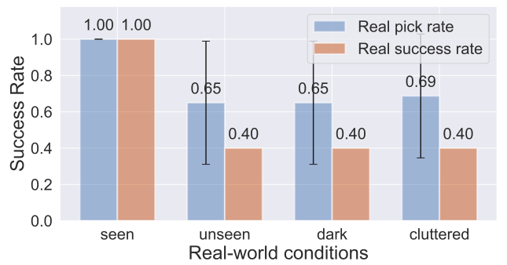
Note: A large dataset enables the policy to exhibit some robustness to variations in objects or lighting.
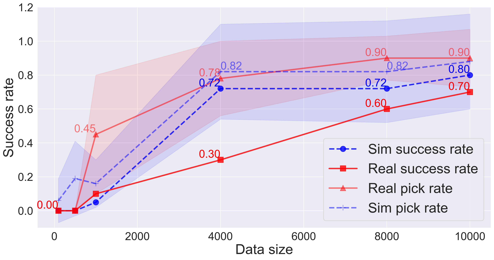
Note: Real-world and simulation data often exhibit variations in both distribution and quality, because of differences in scene initialization methods and trajectory preferences between human operators and the rule-based policy.
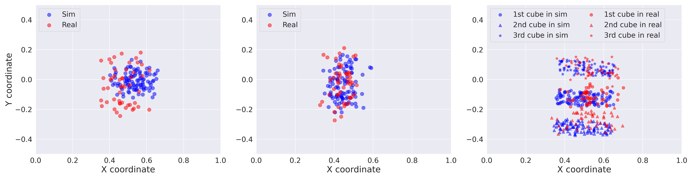
Note: Despite efforts to randomize object positions, data distributions differ slightly due to the challenge of achieving true randomness in real-world settings.
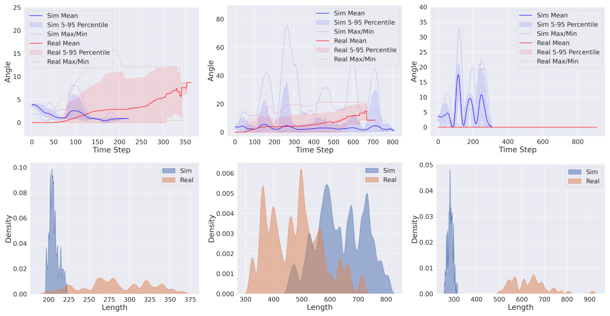
Note: Left: Kernel Density Estimate (KDE) of the Euclidean distance traveled by the robotic arm's end effector between adjacent time steps. Right: The number of time steps taken by the robotic arm from the start of movement to the first closure of the gripper. "Sim" and "Real" indicate models trained on simulated and real data, respectively, while "Co-train" and "Fine-tune" refer to models trained on a mix of data and pre-trained with real data, respectively.
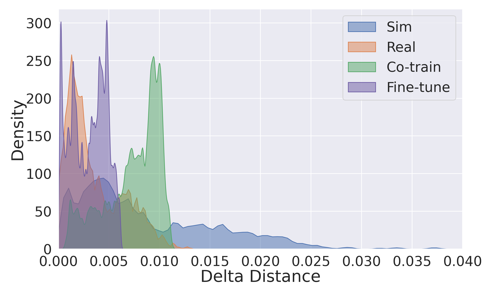
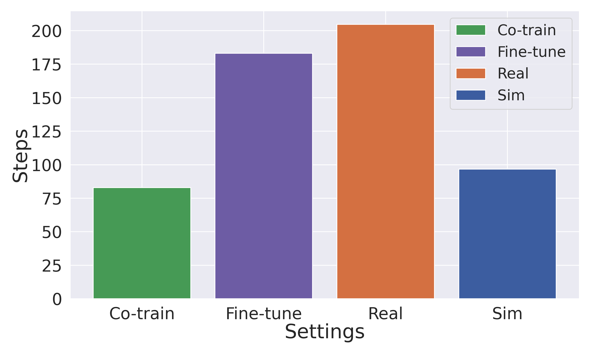
Note: The distribution of simulation and real data is generally similar. The data generated by our method can be integrated into real data through pretraining or co-training, introducing new features without causing the training process to collapse.
RE3SIM leverages 3D reconstruction and a physics-based simulator, providing small 3D gaps that enable large-scale simulation data generation for learning manipulation skills via sim-to-real transfer. We first reconstruct the background and the objects of the scene separately, and then align them with the robot in the real world. Then high-quality simulation data can be generated in the reconstructed simulator, which can be used to train a policy that can be transferred to the real world.
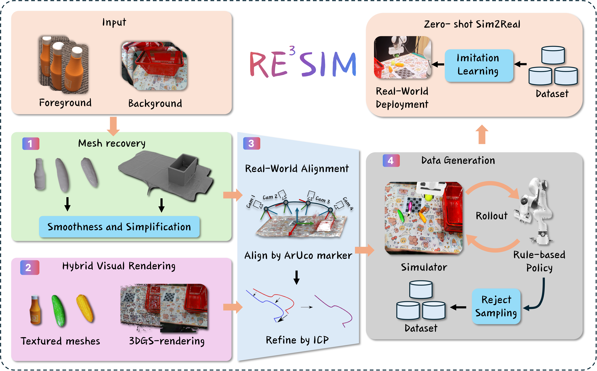
Rendering results of place a vegetable on the board task.
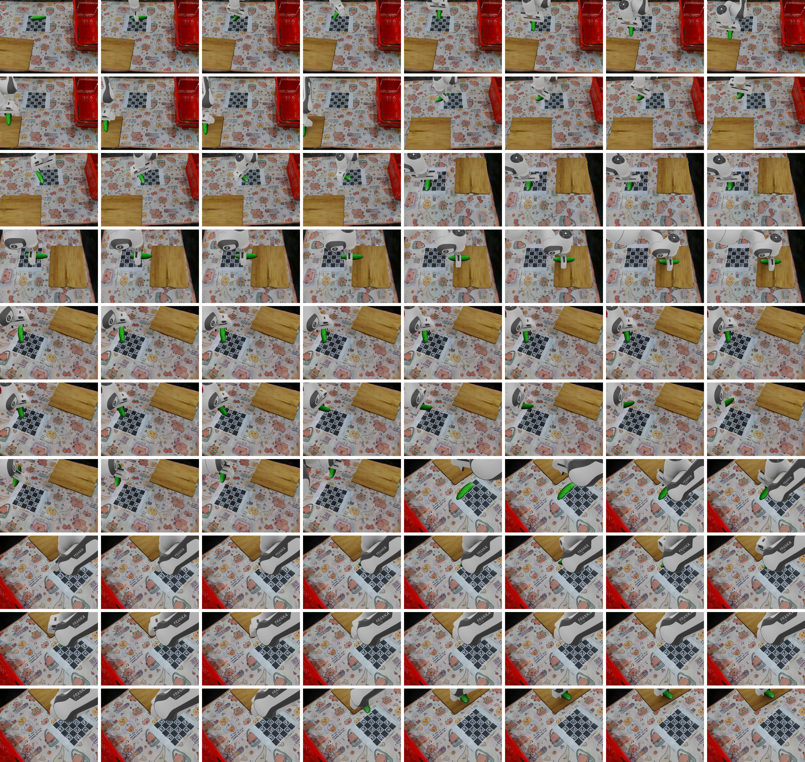
Rendering results of stack blocks task.
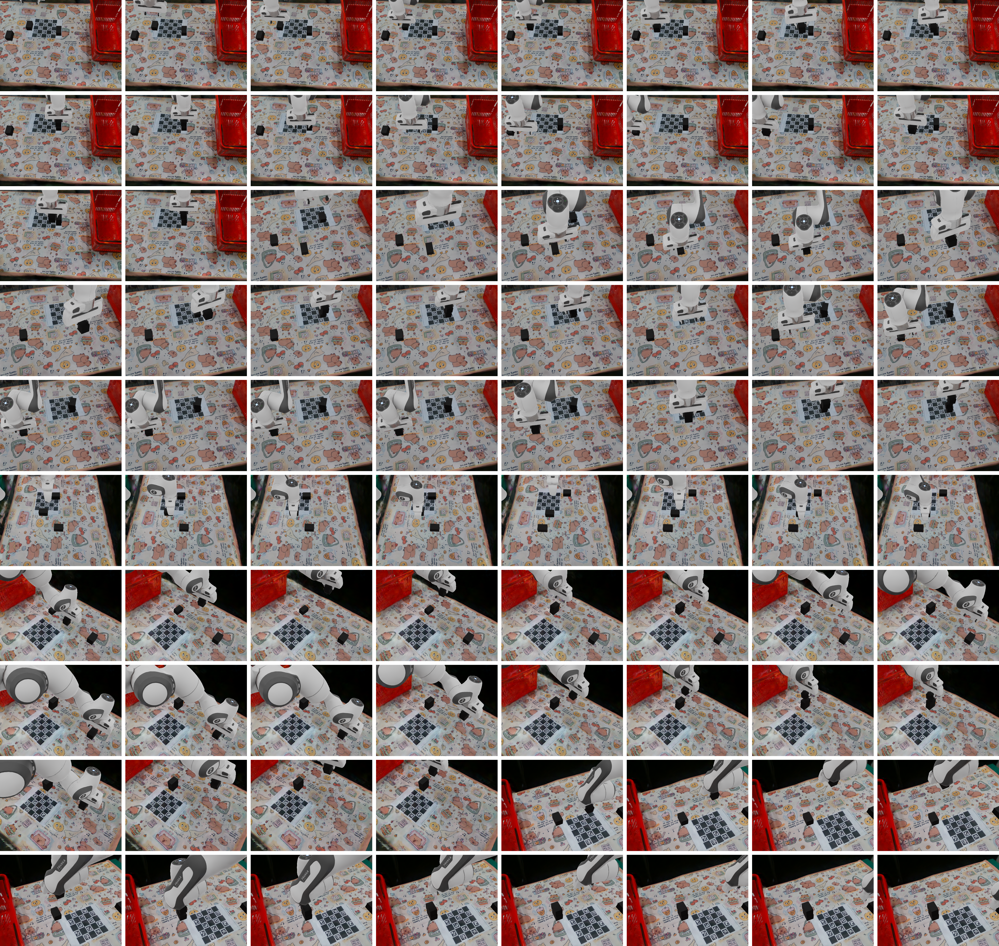
Rendering results of clear objects on the table task.
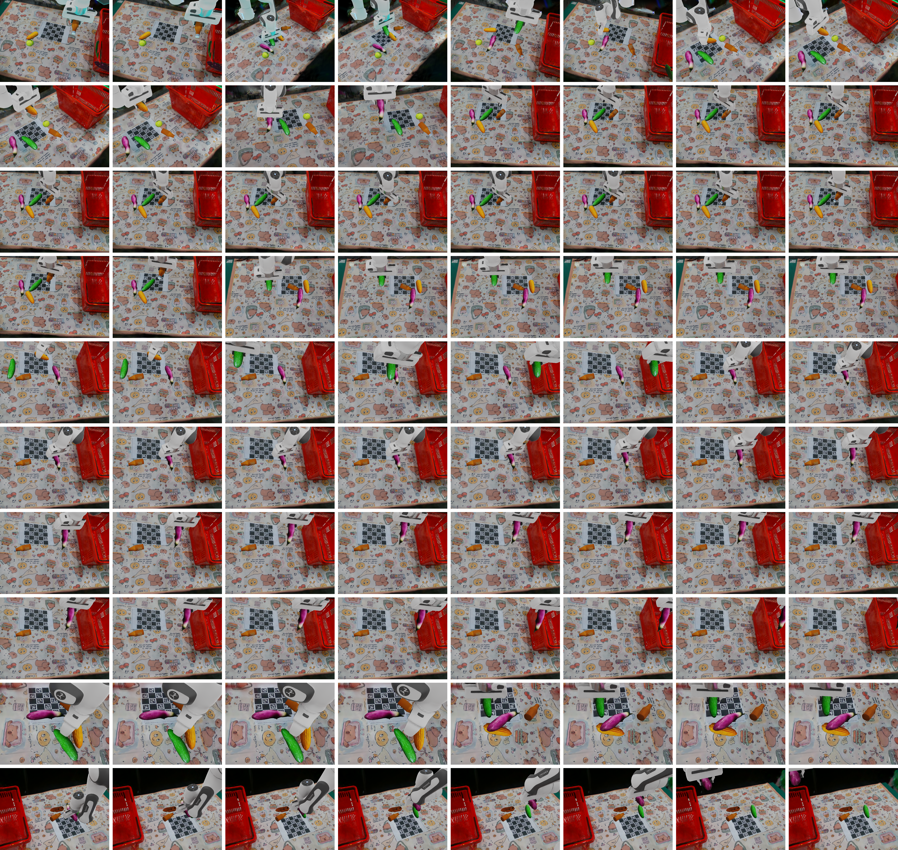